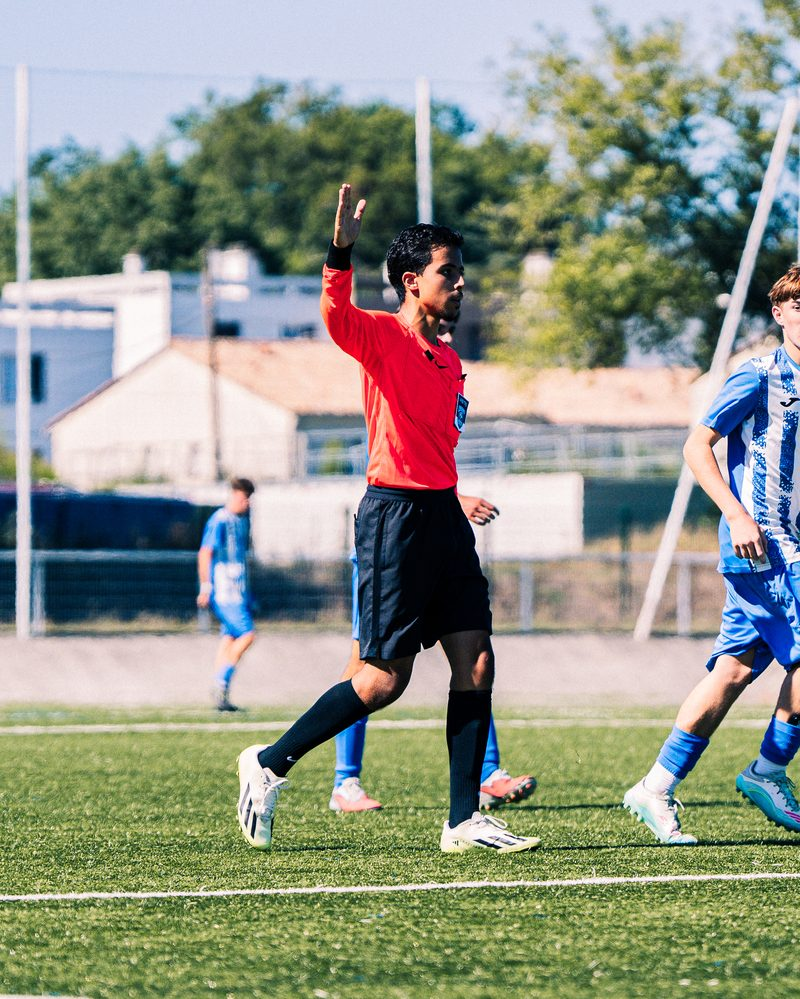

Arbitre Central
- 8 Matchs Officiés
- 758 Minutes
- 58 Km parcourus
- 4 Cartons jaunes
- 1 Carton rouge

OBJECTIF : Stage en DevOps, SysAdmin & Réseau de 8 à 10 semaines en janvier 2027

District de la Gironde
SAM Football


Actuellement en BUT Informatique (parcours International) à l'IUT de Bordeaux, mon profil se cultive avec une approche polyvalente de la tech.
Animé par la volonté d'avoir un véritable impact sur les projets que j'entreprends, je vois le code comme étant un levier d'optimisation. Qu'il s'agisse de déployer et sécuriser des réseaux, d'automatiser des tâches ou de construire des interfaces web ergonomiques, j'aime intervenir sur toute la chaîne.
J'aborde chaque tâche avec la philosophie suivante :
Maximiser mes performances, fiabiliser les processus et créer des solutions fluides tout en minimisant l'effort et les ressources nécessaires.
Rentrons en contact !